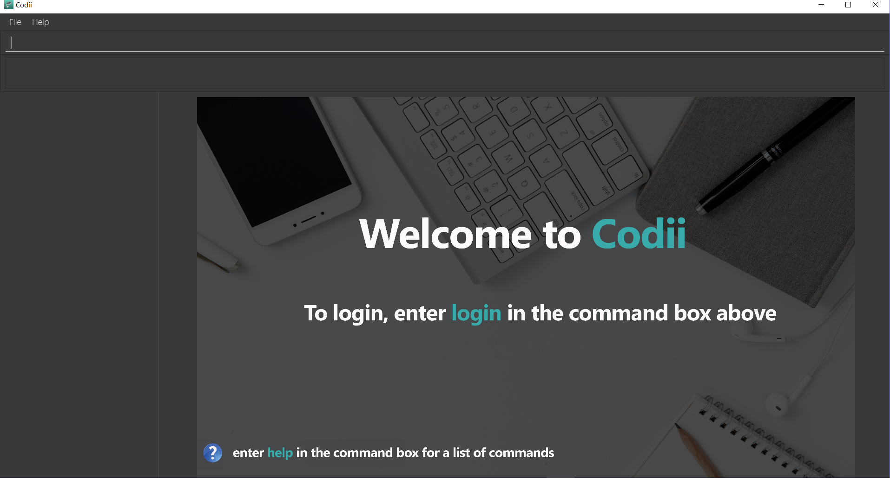

By: CS2103Aug2017 T17-B1 Since: Sep 2017 Licence: MIT
- 1. About
- 2. Introduction
- 3. Quick Start
- 4. Features
- 4.1. Logging into the address book application :
login - 4.2. Logging out of the address book application :
logout - 4.3. Viewing help :
help - 4.4. Adding a debtor:
add - 4.5. Listing all persons :
list - 4.6. Listing all blacklisted persons :
blacklist - 4.7. Listing all whitelisted persons :
whitelist - 4.8. Editing a person :
edit - 4.9. Locating persons by name:
find - 4.10. Increasing the debt of a debtor:
borrow - 4.11. Decreasing the debt of a person:
payback - 4.12. Resetting the debt of a person:
repaid - 4.13. Deleting a person :
delete - 4.14. Banning a debtor :
ban - 4.15. Unbanning a blacklisted person :
unban - 4.16. Selecting a person :
select - 4.17. Selecting a nearby person:
nearby - 4.18. Listing entered commands :
history - 4.19. Sorting all contacts :
sort - 4.20. Filter contacts by tags :
filter - 4.21. Undoing previous command :
undo - 4.22. Redoing the previously undone command :
redo - 4.23. Setting the path to local profile pictures folder :
setpath - 4.24. Clearing all entries :
clear - 4.25. Exiting the program :
exit - 4.26. Saving the data
- 4.27. Loading the data
- 4.1. Logging into the address book application :
- 5. FAQ
- 6. Command Summary
- 7. Current features
- 8. Features to be included by
V2.0
1. About
This user guide will give you an overview of how to use Codii. This guide includes step-by-step instructions on how each command work, FAQs and a summary of every command you will learn.
The terms used in this guide are as follows:
-
Blacklist - List of people who are banned
-
Whitelist - List of people who have cleared their debts
-
Index - The ordering of a contact in the list
-
Cluster - The general location of a person based on [postal districts]
2. Introduction
Codii is a free to use address book catered to suit the needs of debt collectors. You can enter debtors into Codii, track the amount of debt owed, manage deadlines, ban and unban debtors and even organise them by location.
Codii is available for the Linux, Windows, and Mac OS operating systems.
3. Quick Start
-
Ensure you have Java version
1.8.0_60or later installed in your Computer.Having any Java 8 version is not enough.
This app will not work with earlier versions of Java 8. -
Download the latest
addressbook.jarhere. -
Copy the file to the folder you want to use as the home folder for your Address Book.
-
Double-click the file to start the app. The GUI, as seen in Figure 1.1 below, should appear in a few seconds.
Figure 1.1 : Codii login page
-
Log into the app using the format specified in the welcome screen. The application should look similar to Figure 1.2 after clicking on a person in the left panel.

Figure 1.2 : Full information of the person that is selected in the left panel
-
Type the command in the command box and press Enter to execute it.
e.g. typinghelpand pressing Enter will open the help window. -
Some example commands you can try:
-
list: lists all contacts -
addn/John Doe hp/98765432 home/60773707 e/johnd@example.com a/John street, block 123, #01-01 pc/321123 d/123 dl/11-12-2018: adds a contact namedJohn Doeto the Address Book. -
delete3: deletes the 3rd contact shown in the current list -
exit: exits the app
-
-
Refer to the Features section below for details of each command.
4. Features
Command Format
-
Words in
UPPER_CASEare the parameters to be supplied by the user e.g. inadd n/NAME,NAMEis a parameter which can be used asadd n/John Doe. -
Items in square brackets are optional e.g
n/NAME [t/TAG]can be used asn/John Doe t/friendor asn/John Doe. -
Items with
… after them can be used multiple times including zero times e.g.[t/TAG]…can be used ast/friend,t/friend t/familyetc. -
Parameters can be in any order e.g. if the command specifies
n/NAME hp/HANDPHONE_NUMBER,hp/HANDPHONE_NUMBER n/NAMEis also acceptable.
4.1. Logging into the address book application : login
Logs into the address book.
Format: login USERNAME PASSWORD
Examples:
-
login userAcc_123 pa$$_Word!@#& -
login batMan_111 (Batcave.327+-)
4.2. Logging out of the address book application : logout
Logs out of the address book.
Format: logout
4.3. Viewing help : help
Format: help
4.4. Adding a debtor: add
Adds a debtor to the address book. Date borrowed for debtor is automatically
noted down. The Office phone, Deadline, Interest and Tag fields are optional.
Format: add n/NAME hp/HANDPHONE_NUMBER home/HOME_PHONE_NUMBER e/EMAIL a/ADDRESS pc/POSTAL_CODE d/DEBT [op/OFFICE_PHONE_NUMBER] [dl/DEADLINE] [int/INTEREST] [t/TAG]…
| A debtor can have any number of tags (including 0) |
Examples:
-
add n/John Doe hp/98765432 home/60773707 op/60073007 e/johnd@example.com a/John street, block 123, #01-01 pc/321123 d/123 dl/11-11-2018 -
add n/Betsy Crowe t/friend e/betsycrowe@example.com a/Newgate Prison hp/81234567 home/61018123 pc/000001 d/1234 t/criminal
4.5. Listing all persons : list
Shows a list of all persons in the address book.
Format: list
4.6. Listing all blacklisted persons : blacklist
Shows a list of all blacklisted persons in the address book.
Format: blacklist
4.7. Listing all whitelisted persons : whitelist
Shows a list of all whitelisted persons in the address book.
Format: whitelist
4.8. Editing a person : edit
Edits an existing debtor, blacklisted/whitelisted contact in the address book.
Format: edit [INDEX] [n/NAME] [hp/HANDPHONE_NUMBER] [home/HOME_PHONE_NUMBER] [op/OFFICE_PHONE_NUMBER] [e/EMAIL] [a/ADDRESS] [pc/POSTAL_CODE] [d/DEBT] [dl/DEADLINE] [int/INTEREST] [t/TAG]…
Examples:
-
edit 1 p/91234567 pc/333111 e/johndoe@example.com
Edits the phone number, postal code, and email address of the 1st person to be91234567,333111, andjohndoe@example.comrespectively. -
edit 2 n/Betsy Crower t/
Edits the name of the 2nd person to beBetsy Crowerand clears all existing tags. -
list
select 1
edit n/Peeta Pen
Edits the name of the 1st person in the address book to bePeeta Pen.
4.9. Locating persons by name: find
Finds persons whose names contain any of the given keywords.
Format: find KEYWORD [MORE_KEYWORDS]
Examples:
-
find John
ReturnsjohnandJohn Doe -
find Betsy Tim John
Returns any person having namesBetsy,Tim, orJohn
4.10. Increasing the debt of a debtor: borrow
Increase the debt of a debtor by the amount entered.
Format: borrow [INDEX] AMOUNT
Examples:
-
borrow 1 500
Increases the debt of the 1st person by $500. -
borrow 2 1000.10
Increases the debt of the 2nd person by $1000.10. -
list
select 2
borrow 234
Increases the debt of the 2nd person by $234.
4.11. Decreasing the debt of a person: payback
Decrease the debt of a person by the amount entered.
Format: payback [INDEX] AMOUNT
Examples:
-
payback 1 500
Decreases the debt of the 1st person by $500. -
payback 2 1000.10
Decreases the debt of the 2nd person by $1000.10. -
list
select 3
payback 234
Decreases the debt of the 3rd person by $234.
4.12. Resetting the debt of a person: repaid
Resets the debt of a person to zero and sets the date repaid field of that person.
Format: repaid [INDEX]
Examples:
-
repaid 1
Resets the debt of the 1st person to zero and sets the date of repayment in his/her record. -
select 2
repaid
Resets the debt of the 2nd person to zero and sets the date of repayment in his/her record.
4.13. Deleting a person : delete
Deletes the specified person from the address book.
Format: delete [INDEX]
Examples:
-
list
delete 2
Deletes the 2nd person in the address book. -
find Betsy
delete 1
Deletes the 1st person in the results of thefindcommand. -
list
select 4
delete
Deletes the 4th person in the address book.
4.14. Banning a debtor : ban
Adds the specified debtor from current records to blacklist.
Format: 'ban [INDEX]'
Examples:
-
list
ban 2
Adds the 2nd person in the address book to blacklist. -
find Betsy
ban 1
Adds the 1st person in the results of thefindcommand to blacklist. -
select 3
banAdds the 3rd person in the address book to blacklist.
4.15. Unbanning a blacklisted person : unban
Removes the specified person from blacklist.
Format: 'unban [INDEX]'
Examples:
-
blacklist
unban 2
Removes the 2nd person from blacklist. -
find Betsy
unban 1
Removes the 1st person in the results of thefindcommand from blacklist. -
select 3
unbanRemoves the 3rd person in the address book from blacklist.
4.16. Selecting a person : select
Selects the person identified by the index number used in the last person listing.
Format: select [INDEX]
Examples:
-
list
select 2
Selects the 2nd person in the address book. -
find Betsy
select 1
Selects the 1st person in the results of thefindcommand.select
Selects the first person in the last person listing.
4.17. Selecting a nearby person: nearby
Selects the person identified by the index number used in the listing of nearby contacts of currently selected person,
Format: nearby [INDEX]
Examples:
-
list
select 2
Selects the 2nd person in the address book. -
nearby 1
Selects the 1st person in the nearby contacts listing of the previously selected person. -
nearby
Selects the next person in the nearby contacts listing of the previously selected person.
4.18. Listing entered commands : history
Lists all the commands that you have entered in reverse chronological order.
Format: history
|
Pressing the ↑ and ↓ arrows will display the previous and next input respectively in the command box. |
4.19. Sorting all contacts : sort
Sorts all the contacts in the address book in specified order. If no order is specified, the contacts are sorted in ascending lexographical order.
Format: sort [ORDERING]
Examples:
-
sort
Sorts the contacts in the address book by name. -
sort cluster
Sorts the contacts in the address book by their postal districts.
4.20. Filter contacts by tags : filter
Filter contacts in the address book according to the tags specified.
Format: filter TAG1 TAG2 …
Examples:
-
filter friendly
Displays contacts with thefriendlytag. -
filter tricky violent dishonest
Displays contacts who have at least one of these three tags:tricky,violent,dishonest.
4.21. Undoing previous command : undo
Restores the address book to the state before the previous undoable command was executed.
Format: undo
|
Undoable commands: those commands that modify the address book’s content ( |
Examples:
-
delete 1
list
undo(reverses thedelete 1command) -
select 1
list
undo
Theundocommand fails as there are no undoable commands executed previously. -
delete 1
clear
undo(reverses theclearcommand)
undo(reverses thedelete 1command)
4.22. Redoing the previously undone command : redo
Reverses the most recent undo command.
Format: redo
Examples:
-
delete 1
undo(reverses thedelete 1command)
redo(reapplies thedelete 1command) -
delete 1
redo
Theredocommand fails as there are noundocommands executed previously. -
delete 1
clear
undo(reverses theclearcommand)
undo(reverses thedelete 1command)
redo(reapplies thedelete 1command)
redo(reapplies theclearcommand)
4.23. Setting the path to local profile pictures folder : setpath
Sets the folder location to access debtors profile pictures.
Format: setpath
Examples:
-
setpath C:/Users/acer/Desktop/SE/profilepic/ -
setpath out/production/resources/images/
4.24. Clearing all entries : clear
Clears all entries from the address book.
Format: clear
4.25. Exiting the program : exit
Exits the program.
Format: exit
4.26. Saving the data
Address book data are saved in the hard disk automatically after any command that changes the data.
There is no need to save manually.
If address book data can be loaded successfully, backup address book data is saved upon starting the program.
4.27. Loading the data
If the data file does not exist or cannot be read:
-
Backup data file will be loaded, if available and readable.
-
If backup data is unavailable:
-
You will be given a sample address book.
-
-
If backup data exists but cannot be read :
-
You will be given an empty address book.
-
|
To quickly revert address book data to the state of last use:
|
5. FAQ
Q: How do I transfer my data to another Computer?
A: Install the app in the other computer and overwrite the empty data file it creates with the file that contains the data of your previous Address Book folder.
Q: What is the difference between repaid command and payback command?
A: repaid command completely clears a debtor’s debt while payback clears a specified amount. In both cases, when the debt reaches zero, the person is
transferred to whitelist and date repaid is set to the date the command is executed.
Q: If I delete someone from the masterlist, will he/she be deleted from the other lists as well?
A: Yes.
Q: Is it possible to send a blacklisted person to the whitelist?
A: No. You have to unban the person prior to sending him/her to the whitelist.
Q: When will a debtor’s debt be accrued by his/her loan’s interest rate?
A: As of now, the default date to accrue is on the first day of the month.
Q: If I execute the sort command in the masterlist, will the other lists be sorted as well?
A: Yes.
6. Command Summary
-
Login :
login USERNAME PASSWORD
e.g.login userAcc_123 pa$$_Word!@#& -
Logout :
logout -
Add :
add n/NAME hp/HANDPHONE_NUMBER home/HOME_PHONE_NUMBER e/EMAIL a/ADDRESS pc/POSTAL_CODE d/DEBT [op/OFFICE_PHONE_NUMBER] [dl/DEADLINE] [int/INTEREST] [t/TAG]…
e.g.add n/James Ho p/22224444 e/jamesho@example.com a/123, Clementi Rd pc/123466 d/123 dl/11-03-2017 t/friend t/colleague -
Clear :
clear -
Borrow :
borrow [INDEX] AMOUNT
e.g.borrow 1 500.50 -
Pay back :
payback [INDEX] AMOUNT
e.g.payback 1 500.50 -
Repaid :
repaid [INDEX]
e.g.payback 1 -
Delete :
delete [INDEX]
e.g.delete 3 -
Ban :
ban [INDEX]
e.g.ban 3 -
Unban :
unban [INDEX]
e.g.unban 3 -
Edit :
edit [INDEX] [n/NAME] [hp/HANDPHONE_NUMBER] [home/HOME_PHONE_NUMBER] [op/OFFICE_PHONE_NUMBER] [e/EMAIL] [a/ADDRESS] [pc/POSTAL_CODE] [d/DEBT] [dl/DEADLINE] [int/INTEREST] [t/TAG]…
e.g.edit 2 n/James Lee e/jameslee@example.com -
Find :
find KEYWORD [MORE_KEYWORDS]
e.g.find James Jake -
List :
list -
Blacklist :
blacklist -
Whitelist :
whitelist -
Help :
help -
Select :
select [INDEX]
e.g.select 2 -
History :
history -
Nearby :
nearby [INDEX]
e.g.nearby 2 -
Sort :
sort [ORDERING]
e.g.sort debt -
Setpath :
setpathe.g.setpath C:/Users/acer/Desktop/SE/profilepic/ -
Filter :
filter TAG1 TAG2 …
e.gfilter friendly cooperative -
Undo :
undo -
Redo :
redo
7. Current features
-
Adda person (since v1.0) -
Deletea person (since v1.0) -
Have a help screen with detailed instructions (since v1.0)
-
Add tags to contacts (since v1.0)
-
Editcontacts (since v1.0) -
Findcontacts by name (since v1.0) -
Automatic backup storage (since v1.0)
-
Debtfield (since v1.0) -
Prevent duplicate contacts (since v1.0)
-
Logincommand (since v1.1) -
Password masking (since v1.1)
-
Postal codefield (since v1.1) -
Deadlinefield (since v1.1) -
Date borrowedfield (since v1.1) -
Blacklist(since v1.1) -
Full info panel (since v1.1)
-
BanandUnbana person (since v1.1) -
Nearbycommand (since v1.2) -
Borrowcommand (since v1.2) -
Display nearby contacts (since v1.2)
-
Interestfield (since v1.2) -
Sortby various fields (since v1.3) -
Paybackcommand (since v1.3) -
Repaidcommand (since v1.3) -
Whitelistcommand (since v1.3) -
Logoutcommand (since v1.3) -
Person’s debts are automatically incremented according to the interest rate of their loan (since v1.3)
-
Filter contacts by tags (since v1.4)
-
Replace
Phonefield withHandphone,Home phoneandOffice phone(since v1.4) -
Profile pictures of clients shown next to their details. (since v1.4)
-
List of people who have overdue debts. (since v1.4)
-
A progress bar to indicate how much of the person’s debt has been paid off. (since v1.4)
8. Features to be included by V2.0
-
Different appearance themes.
-
A feature to export a person’s contact in another format.
-
Helpcommand that displays screenshots of positive examples. -
Able to view the last login time.
-
Able to impose different periods of ban on a specified person in the blacklist
-
Two FA authentication for login and every other important actions.
-
Validity checks on client’s personal information.
-
Email notifications when the user’s account in logged in from an unknown device.
-
An automated journey scheduler.
-
'Add-log' button that generates specific date and time.
-
A file uploading feature.
-
Random generation of a contact from the cleared list.
-
Feature to create a custom field.